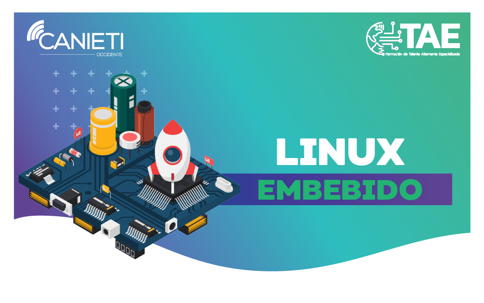

Linux en el Mundo Actual
Linux es uno de los sistemas operativos más utilizados en servidores, desarrollo de software y dispositivos embebidos.
Hoy en día, Linux es utilizado en una amplia gama de dispositivos y sistemas, desde servidores web y supercomputadoras hasta dispositivos móviles y sistemas de IoT. Más del 90% de los servidores en la nube están basados en Linux, y es el sistema operativo de elección para la mayoría de las supercomputadoras a nivel mundial.
¿Qué es un Servidor Linux?
Un servidor Linux es un servidor impulsado por el sistema operativo de código abierto Linux. Ofrece a las empresas una opción de bajo costo para entregar contenido, aplicaciones y servicios a sus clientes. Gracias a su naturaleza de código abierto, los usuarios también se benefician de una comunidad sólida de recursos y soporte.
Cada variedad de servidor Linux está diseñada con distintos usos en mente:
- Para servidores web, es común utilizar CentOS®.
- Para aplicaciones que manejan grandes volúmenes de usuarios, se prefieren soluciones como Red Hat® Enterprise o Ubuntu Server.
- Para necesidades empresariales específicas, un servidor TurnKey Linux puede ser suficiente.
¿Por Qué Utilizar Servidores Linux?
- Desempeño: Los servidores Linux ofrecen el rendimiento necesario para una infraestructura eficiente.
- Seguridad: Permiten una optimización avanzada en permisos de seguridad.
- Estabilidad: Impulsados por tecnología de código abierto, cuentan con capacidades de imagen avanzadas.
- Escalabilidad: Linux facilita la integración con tecnologías en la nube para escalar empresas fácilmente.
¿Por Qué Linux es el Sistema Operativo Preferido de los Desarrolladores?
Linux es uno de los sistemas operativos más potentes y seguros, ideal para desarrolladores de todos los niveles. Su código abierto y gratuidad lo hacen ideal para el desarrollo de sistemas operativos, aplicaciones móviles y software empresarial.
Algunos programas comunes para Linux incluyen OBS, VLC, LibreOffice, VI (editor de texto) y Geary (cliente de correo).
La comunidad de Linux es un motor de innovación que promueve un ambiente de colaboración y libre acceso al conocimiento.
Linux Embebido
Linux embebido es un tipo de kernel Linux diseñado para su uso en dispositivos o sistemas empotrados. Es una versión optimizada y reducida del sistema operativo, adaptada a las necesidades de sistemas embebidos con limitaciones de potencia y tamaño.
Linux embebido es flexible, de bajo costo, de código abierto y soporta múltiples proveedores de software. A diferencia de sistemas embebidos propietarios, permite la modificación y redistribución del código fuente.
Ventajas de Linux en Comparación con Otros Sistemas Operativos
- Es open source y gratuito.
- Basado en UNIX.
- Bajo consumo de recursos y alto rendimiento.
- Seguridad robusta gracias a una comunidad activa.
- Gran estabilidad.
- Personalización avanzada.
- Amplia variedad de distribuciones para distintos requisitos.
- Compatibilidad con diversos dispositivos de hardware.
- Ideal para computadoras de sobremesa, portátiles y servidores.
- Preferido por los desarrolladores y líder en servicios y supercomputadoras.
Linux en el Sector Educativo y Corporativo
Linux proporciona una infraestructura sólida y escalable, ideal para organizaciones en crecimiento. Empresas como Google, Facebook y Amazon utilizan Linux para gestionar grandes volúmenes de información eficientemente.
En la educación, enseñar Software Libre y Linux es crucial para la independencia tecnológica y la equidad en el acceso a la tecnología, desarrollando habilidades técnicas en los estudiantes.
- Independencia Tecnológica: Promueve la autonomía de países latinoamericanos frente a tecnologías propietarias.
- Acceso Equitativo: La gratuidad y accesibilidad de Linux facilitan la inclusión digital en la educación.
- Desarrollo de Habilidades: Los estudiantes aprenden programación, configuración de sistemas y seguridad informática, habilidades valoradas en el mercado laboral.